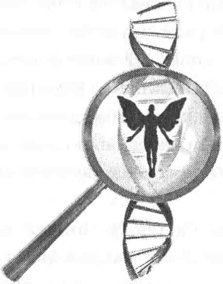

Kryon

Kryon
DNA’NIN DÖRDÜNCÜ GRUBU: Tanrı Tabakaları
Tanrı tabakaları Onuncu, On-birinci ve On-ikinci Tabakalardır. Boyutlar-arası nitelikler şimdi en yüksek düzeydedir ve bu üç tabaka hiç 3B’de değildir. Aslında, birçok kişi bu tabakaların ne “yaptıklarını” merak edecektir. Şimdilik, sevgili varlıklar, bu tabakaların bazılarının belirli bir işleve sahip olmak yerine, sadece “olma”larına alışmalısınız. Bunlar son tabakalar gibi işlemler ya da anılar değildir; onları yemeğin içinde piştiği tencere olarak düşünün. Yemek yeme ve varlığınızı sürdürme sürecinin bir parçası mutfak aletleridir. Bu tabakalar “DNA’nın içinde oturduğu tanrısal divan”ı temsil eder ve diğerlerinin var olabilmeleri için gereklidirler.
ONUNCU TABAKA: Tanrısal İnanç - Birinci Tanrı Tabakası (bkz. s. 362)
Siz, “kendi tanrısallığınızı anlama çağrısı” olan tanrısal inancın yaşamı geçirmenize yardımcı olması için kullanabileceğiniz bir enerji olduğunu düşünebilirsiniz. Bunda bir gerçeklik vardır, ama anlattığımız diğer tabakalar bu çağrıyla doludur. Yüksek Benlik (Altıncı Tabaka) bu keşif için bir kanaldır. Öyleyse bu Onuncu Tabaka gerçekte neyle ilgilidir?
Bu, sonraki iki tabaka gibi, tamamen kuantum bir tabakadır. Bu onun gerçek bir kuantum halin niteliklerine sahip olduğu anlamına gelir. Benim söylemek üzere olduğum şey, kuantum bir halde bulunmayan 3B İnsan zihni tarafından tam olarak anlaşılamaz!
Diyelim ki bir ressam bir tuvale resim yapmak üzeredir. Ama bu resmin bir arka plânı, bir zemini olacaktır; böylece, ressam tüm tuvali açık maviye boyayarak başlar. Ondan sonra onun nesneleri resmederken kullandığı her boya bu açık mavi zemin “divanı” içinde yer alacaktır; bu, ressamın, resmedeceği diğer her şeyin enerjisini yakalamasına yardımcı olan sürekli, değişmez bir renk çeşnisidir.
Sonra ressam bu zeminin üzerine nesneleri -bulutları, tarlaları, çiçekleri ve ağaçları- resmeder. Sonunda tam bir 2B tablo yaratır. Eğer siz bu ressama, “Mavi nerede?” diye sorarsanız, o size, “Heryerde. Ben bu resme onunla başladım” diyecektir. Siz, “Evet, ama nesneleri resmederken onu diğer renklerle örttün” diyebilirsiniz. Ressam o zaman size şöyle diyecektir: “Evet, ama o hâlâ orada, diğerlerinin altında; siz onu göremeseniz de orada hâlâ mavi var."
Buradaki mecaz şudur: DNA’nız, İlahî yaşam plânınızın geriye kalanını yerine yerleştirmek ya da resmetmeye başlamak için Tanrı tabakalarına sahip olmalıdır. Öyleyse bu tabakaları zemin rengi olarak düşünün. Bu zemin rengi DNA tabaka sayılarının sonunda (10, 11, 12) yer almaktadır, ama bu öğretide lineerliğin bulunmadığını size en başında söylemiştik.
Bu yüzden, şimdi sizi bu sayılarla bir halka yaratmaya, zihninizde altın bir DNA yüzüğü yaratmaya davet ediyoruz. Bu yüzük birden on ikiye kadar kesintisiz bir halkadır ve ona baktığınızda aşikâr bir başlangıç ya da son göremezsiniz. Böylece elinizde, on iki bölüme ayrılmış, ama bir başlangıcı ve sonu -dolayısıyla da lineerliği- olmayan bir yüzük vardır. Şimdi bu altın yüzüğü eritecek ve yeniden dökeceksiniz, böylece tüm bölümleri birbirine karıştırıp belirsizleştireceksiniz. Bunu yaptığınızda, artık herhangi bir bölümü ya da tabakayı tanımlamanız mümkün olmaz. İşte bu, bu öğretinin dışındaki, gerçek DNA’nın çalışma biçimidir. Öyleyse bu Onuncu Tabaka nerededir? “Tanrı tabakaları,” açık-mavi zemin örneğindeki gibidir; onlar DNA tayfında her yerdedir ve bölümlere ayrılamazlar. Ama biz yine de bunu yapacağız ki, siz, ressam bu işe başladığında tuvalin hangi renklere boyanmış olduğunu bilesiniz. “Evet, ama eğer zemine üç Tanrı tabakası katarsan, o zaman tuvali üç renkle boyamış olursun. Onların hangisi zemindir?” Onların hepsi zemindir, çünkü hepsi aynı anda boyanmıştı. Bunu anlamaya çalışma, sevgili İnsan; sadece, onu kutla.
Gerçekten kuantum bir hal, dolaşık bir halde bulunan parçacıkları içerir. Bu, “aynı zamanda her yerde ve hiçbir yerde” bulunan bir şeyi açıklamaya çalışmanın tek yoludur. O, rastgele görünen ve lineer olmayan kuantum eylemlerin birçoğunun temelidir. Siz aynı zamanda her yerde bulunan niteliklere sahip olduğunuzda, artık onları -daha önce yaptığınız gibi- ayıramaz, sayamaz ya da aralarında bir sınır oluşturamazsınız. Sizin tüm lineer hesaplama ve geometri kurallarınız bir şeyin “her yerde” olmasını desteklemez.
İnanç tabakası da böyledir. O, gereksiııildiğinde, tüm tabakaları etkiler ve o gerçekten de çok gereksinilir! Siz, yaşamınızdaki ezoterik nitelikleri anlamanıza neyin yol açmış olduğunu hiç merak ettiniz mi? Siz, Yüksek Benliğin spiritüel kavramlarına gittikçe daha çok aşina olurken ve eşzamanlılığı kullanarak yaşamınızdaki durumları birlikte-yaratmaya başlarken, gerçekten lineer olan bir yaşamdan daha çok uzaklaştınız ve çevrenizdeki kişilere daha yabancı göründünüz!
Çok spiritüel olan ve Tanrı’yı sizin kadar çok seven birçok kişi, sizin yapmakta olduğunuz her şey yersiz, yabancı, garip, hatta dengesiz göründüğünden, sizden uzaklaştı. Ne de olsa, eğer siz sayıları görünmez bir fırçayla gökyüzüne yazarak, sonra hesaplamalar esnasında onları rastgele değiştirerek matematik yapmaya karar vermişseniz, matematik öğretmeni büyük olasılıkla sizden sınıfı terk etmenizi isteyecektir! Birçoğunuzdan, düşünüşünüzde daha kuantum olmaya başladığınız için yaşam sınıfını terk etmeniz istenmiştir; oysa o, sizden onu anlamayı öğrenmenizi istediğimiz düşünüştür.
Tanrı çok-boyutludur, İnsanlar ise değildirler. Bu, Kryon çalışması boyunca birçok kez anlatılmıştır ve partnerim onu her gün görür. O bunu sunumda bulunduğu yeni çağ salonlarında bile görür, çünkü oralarda eski 3B metafiziğine saplanıp kalmış olanlar da vardır. Orada onlar, medyumlar ve şifacılar, bir seminerde öğretilmekte olan bu öğretiyi kavramaya çalışırlar. Ama bu sırada onların zihinleri tüm bu öğretiye itiraz ederek, şöyle der: “Tüm bu bilim de nedir? Kendimizi yaşamın akışına bıraktığımız, istediğimiz zaman medyumluk yaptığımız, uzun derin meditasyonlar ve bir sürü iyi, güçlü enerji çalışması yaptığımız o güzel eski günlere ne oldu? Üç-dört saatimizi meditasyon yaparak, gezegene ve birbirimize enerji yollayarak geçirdiğimiz o toplantılara ne oldu?” Benim buna bir yanıtım var, ama birçoğunuz ondan hoşlanmayacak.
Sizin spiritualiteniz tekâmül ediyor. Yaratabileceğiniz her enerjiyi şimdi bir anda yaratabilecekken, neden birbirinizin gözlerine bakarak ya da mantralar söyleyerek saatler harcayasınız? Sizin zaman çerçeveniz değişmiştir! Siz, durağan ve ebedi -ve çok rahat- olduğunu hissettiğiniz bir sisteme saplanıp kalmış olabilir misiniz? Zamanın bu noktasında, Dünya üzerinde barışın, küçük gruplar halinde oturup bir alfa hali içinde saatler geçiren kişiler tarafından yaratılacağına gerçekten inanıyor musunuz? Düşünün: Bu, kadim İnsanların yapmış oldukları bir şeydir ve siz hâlâ o kadim sistemde kalmak istiyorsunuz. Sizin derin spiritüel DNA’nız tekâmül ediyor, yaşamınızda kuantum hale gelerek Dünya için çok daha fazla şeyi başarmanızı sağlıyor. Siz şimdi, sadece oturmak ve “olmak” isteyen, mantralar söyleyen yüzlerce yeni çağcının gücüne sahipsiniz. Merkabah’ınız çok yüksek bir titreşimle bir yerden başka bir yere giderken, siz tek başınıza bu gezegenin ışık-karanlık dengesini etkileyebilirsiniz.
Bu sözlerle sizi incittim mi? Niyetim bu değildi. Niyetim, sizi yeni bir kavrama uyandırmaktı; İnsanların, eski görüşün size mümkün olabileceğini söylediğinin çok ötesindeki bir yere ulaşmaya muktedir olmaya başladıkları kavramına uyandırmaktı. Bu, üstatlığın incelemesidir! Bu, sizin bu dünyanın üstatlarının enerjisini üstlenmeye başlamanızdır! Siz bunu artık sadece bir koltuğa oturup meditasyon yaparak başaramazsınız. Her şeyin bir yeri vardır ve bugünün grup meditasyonu, salondaki bireylerin titreşimini yükseltmeye odaklanmalıdır. Meditasyonu, birbirinizin içindeki Yaratıcı’yı bulmasına ve üstat olmasına yardım etmek için kullanın. Şimdi meditasyonun ve tezahür-ettirmenin bir dengesi vardır ve bu kitabın öğrettiği şey, yeni metafiziğin eski metafizikten çıkarak tekâmül etmekte olduğudur. Metafizik sözcüğü “fiziğin ötesi” anlamına gelir. Bugünün fiziği çok-boyutluluğu keşfetmişken, siz -orada dünün enerjisi içinde oturmuş, vecit hali içinde saatler geçirmeyi özlerken- artık herhangi bir şeyin ötesinde değilsinizdir. Onu bu şekilde düşünün. Bir banyo alın, sonra dışarı çıkıp gezegeni iyileştirin! Öylece küvetin içinde oturup kendinizi eğlendirmeyin. O, dünün spiritualitesi idi.
“Kryon, sen grup meditasyonunun artık işe yaramadığını mı söylüyorsun?” Hayır, öyle demiyorum. O işe yarar, ama bir at ve fayton da işe yarar. O sizi gideceğiniz yere eninde sonunda götürecektir. Ama sevgili varlıklar, artık zamanınızın olmadığını hissetmiyor musunuz? Sizin zamanınız yok!
VAYİKRA, bu Onuncu Tabaka ile ilişkilendirilen İbranice Tanrı ismidir. Benim bu isme verdiğim anlam, “Tanrısallığa Çağrı/İçinizdeki Tanrı’nın Tanınması”dır. Bu tabaka, ayrıca, “Tanrısal Varoluş Kaynağı” olarak da adlandırılabilir. O, Tanrı tabakalarının birincisidir ve kendi tanrısallığınızı anlamaya çağrıyı temsil eder. O, numerolojide bir’dir; bir, “yeni başlangıçlar” anlamına gelir; çünkü bu bir İnsanın Tanrı’ya inanma olasılığıyla ilgili olarak yarattığı birinci enerjidir.
Bu kitabın arkasında yer alan, Onuncu Tabaka ile ilgili illüstrasyon sekiz sayısına benzer. Öyle değildir. O sonsuzluk sembolüdür; çünkü bir İnsan, ilk kez, başlangıcı ve sonu olmayan bir düşünme sürecini başlatmalıdır. Bu illüstrasyona baktığınızda, onun ayrıca bir gökkuşağı olduğunu da göreceksiniz. Bir gökkuşağının aslında bir daire olduğunu biliyor muydunuz? Bir gökkuşağının bir başlangıcı ve sonu yoktur. Ressamın, sıra bu tabakayı tasvir etmeye geldiğinde, bu şekli ve renkleri görmüş olması bir rastlantı değildir. O, derin inanç tabakasıdır, sonsuz bir potansiyele sahiptir ve gökkuşağı gibi, kapsanamaz, ayırılamaz ya da ayrıntılarıyla belirlenemez. O gerçekten kuantum bir etkidir. Bir İnsanın niyetiyle boyanacak olan bir renktir.
Öyleyse şimdi bu enerjiyle, bu DNA tabakasıyla ilgili bir şeyi anlatalım. Hepiniz, spiritüel herhangi bir şeyle ilgilenmeyen kişileri tanırsınız. Evet, onlar kiliseye gidebilir ve ailelerini ve iş yerindeki arkadaşlarını hoşnut eden bir protokolü uygulayabilirler. Ama ne yaptığınızdan onlara söz ettiğinizde, ya sizden hemen uzaklaşırlar ya da, eğer sizi umursuyorlarsa, “Bu bana göre değil” derler.
İşte bu, o tuvalin zeminini hiç boyamamış olan bir İnsandır. Orada, üzerine bir temel inşa edilecek hiçbir “divan” -ve o kişinin böyle bir kitabı almasına neden olacak hiçbir şey- yoktur. Aslında, bu bilgi onlar için gerçek değildir ve biraz gariptir. Bazıları “deli saçması” terimini bile kullanabilirler.
Öyleyse burada en iyi şekliyle özgür seçim vardır. “Tanrısallığa çağrı” işitilmemiştir, dilenmemiştir; o, İnsanın gerçekten istediği bir şey bile değildir. Öyleyse şunu anlayın: Burada, bir Tanrı tabakası olan, ama önce İnsanın onu seçmesi gereken bir tabaka vardır. O, diğer şeylerin daha sonra tohumlanıp bir anlam ifade etmesi için boyanan zemindir.
Joe, en iyi dostu Mark’ın cenaze törenine katılmaktadır. Onlar madencilerdi ve Mark bir maden patlamasında öldüğünde henüz otuz yaşında bile değildi. Joe, tabutun önünde tek başına oturmuş, yaşam hakkında düşünmektedir. Rahip içeri girdiğinde, Joe açıktır. Kalbi sıcak ve yumuşaktır ve acı çektiği için teselli istemektedir. Mark gitmiştir ve Joe buna inanamamaktadır. Rahip, Joe’nun yanına gelir ve ona sevgi dolu bir Tanrı’dan ve Mark’ın şimdi O’nun yanında olduğundan söz eder... Yaşamın bir döngü olduğunu ve Mark’ın farklı bir biçimde hâlâ onunla birlikte olduğunu söyler. Joe, bu konuda düşünür ve gerçekten, yaşamında ilk kez bunu hisseder! Joe, bir kıvılcımın Vayikra denen -ve bu değerli ruhun yeni bir gerçeği bulmasını sağlamak için fazla mesai yapmaya gönüllü olan- bir alevi tutuşturmasına izin vermiştir. Bu gerçek, Joe’ yu, (kiliseye gidilen) Pazar’lar arasında terk etmeyecektir. Ve bu gerçek, bir gün bu adamın, “Efendim, lütfen bu konuda bana daha çok şey anlatın” demesine yol açacak bir zemini boyamaya başlayabilir.
Madenci Joe, cenaze töreninden ayrılır ve rahibin söylediği şeyleri düşünür. Gerçekten de, çevresinde dostunun varlığını hissetmektedir. Sonra Mark’ın ailesini ziyaret eder, onun dul eşiyle birlikte ağlar ve çocuklarını teselli eder. Tanrı’nın onları gerçekten umursadığını ve Mark’ın enerjisinin hâlâ orada olduğunu düşünerek açıkça ağlar. Bu ona yola devam etme arzusunu verir! Bu düşünceyle gülümser. BANG! Onuncu Tabaka, Joe’nun yaşamında, bir madencinin kalbinin şefkati sayesinde kendini aktifleştirmiştir. O, doktrin değildir. Meleksi bir şey de değildir. O şeylerin hiçbiri değildir. O, bir zemini boyamaktır, böylece bu madencinin verdiği her karar onun için spiritüel olarak doğru olacaktır, bir inanç tabakası var olacaktır; yani, bu iman onu nereye götürürse götürsün, onun imanını yaratmasına yardımcı olan bir düzen var olacaktır. Onu Joe yaratmıştır ve yarattığı şey arayışında ona yardım etmeye başlamıştır.
Yaratıcı’yı her yerde, her durumda, her derecede kendi içinde bulan insana ne mutlu, çünkü gezegenin titreşimini değiştiren şey budur.
Dolayısıyla, bu spiritüel niyete, sorulara ve gizemlere karşılık veren bir enerjidir. O, “Gerçekten bir Tanrı var mı? Bilmek istiyorum” diyenlere yardımcı olmak için oradadır. Bunu akademik bir biçimde soranlar akademik bir enerji elde edeceklerdir, bir inanç tabakası değil. Bu tabaka saf niyete ve şefkate karşılık verir.
Onuncu Tabakanın Özeti
Onuncu Tabaka, Tanrı tabakalarının birincisidir ve bir İnsanın Tanrı’yı arayışını başlatan ilk çok-boyutlu tabakadır. Özgür seçime bağlıdır ve bu ondan istenmedikçe, bir İnsanı spiritüel herhangi bir şeye ikna etmek için hiçbir şey yapmaz. Bu ondan istendiğinde, sadece öğrenime izin verir, ama hâlâ öğretmek ya da ikna etmek için bir şey yapmaz. Sadece anlayışın yerleşmesine yardım eder, İnsanın spiritüel gerçeği kendi başına keşfetmesine izin verir.
Diğer tabakalar gibi, bu tabaka da hareketsiz durarak, değişik kaynaklardan eşzamanlılık yoluyla gelen boyutlar-arası “işaretleri” bekler. O, birinci Tanrı tabakasıdır ve İnsan bunu isteyene, fark edene ya da buna muhtaç olduğu bir durumda bulunana dek, tam olarak uyanmaz.
Sevgili İnsan, DNA’nda senin inanmana yardımcı olan bir enerjinin bulunması en iyi haliyle Tanrı’nın sevgisidir! O, özgür seçimle işbirliği yapar, ama bir kez sen içindeki Yaratıcıyı aramaya karar verdiğinde, o bu zemin boyama işine girişir, ki bu sen spiritüel yolda ilerlerken baktığın her şeyin sana anlamlı gelmesine yardımcı olacak bir şeydir.
Bugün Joe, maden kuyularına inerken Mark’ın yüzüğünü yanında taşımaktadır. Onu boynuna bir kolye gibi takmaktadır. Dostunun Tanrı’nın murat ettiği biçimde onunla birlikte olduğu düşüncesiyle gülümsemektedir. Joe, Mark’ın oğlunun vaftiz babasıdır ve Tanrı’ya olan inancıyla gurur duymaktadır ve bu onun kendinden daha genç erkeklerin önünde ifade etmekten utanmadığı bir şeydir. Kilisede diz çöker ve Tanrı’nın sevgisinin içinden aktığını hisseder. O, kendi yolunca spiritüel bir adamdır, Tanrı’nın gerçek olduğuna ve onun içinde yaşadığına ikna olmuştur ve tüm bunlar Mark’ın ölümünden ötürü ortaya çıkmıştır.
Bu tabaka hakkında söyleyeceklerimizi bitirmeden önce, size Mark hakkında da bir şey söylemek istiyoruz. Mark, “her yerde bulunan zemin” bağlantısıyla, Joe’nun DNA’sının içindedir. O, son nefesini verirken, Joe’nun gerçeği keşfetmesine yardımcı olmaya niyet etmişti. Böylece, Mark’ın ölümünün, trajik olsa da, Joe’da kendine ait bir yaşam yaratmış olduğunu söyleyebilirsiniz. Ve bu doğrudur. Çünkü bu böyle işler, sevgili varlıklar; ölümün ve kalp-kırıklığının trajedisinden, çoğunlukla, bu dünyadaki birçok kişi için sezgisel idrakler çıkar; böylece, ölen kişinin yakınları ve sevdikleri bu Tanrı tabakasını gerçekten aktifleştirebilirler. Dolayısıyla, şefkat yine kazanır ve İnsanın sevgi dolu bir Tanrı’yı bulmaya yönelik özgür-seçim süreci çoğunlukla tüm acıya ve ölüme üstün gelir, çünkü ölen varlık birçok kişinin kalbinde ve zihninde yaşamaya devam eder. Bu arada, Gaia, her yerdeki birçok Mark sayesinde titreşimini yükseltir.
ON-BİRİNCİ TABAKA: Bilge Tanrısal Dişi - İkinci Tanrı Tabakası (bkz. s. 363)
Burada kadınlar gülümseyecek ve erkekler gözlerini yuvalarında döndürecekler, çünkü onlar burada Tanrıça enerjisiyle ilgili bir başka dersin sunulduğunu düşünecekler. Ama öyle değildir. Bu, denge ile ve Pleiadesliler gelip onu size verdiklerinden beri İnsan ırkının sahip olmadığı bir şeyle ilgili bir derstir. Bu, Saf Şefkat ve Ana tabakasıdır.
Bu da aynı zamanda her yerde bulunan çok-boyutlu bir tabakadır ve onlara çağrıda bulunmadıkça hiçbir şey yapmayan Tanrı tabakalarının bir parçasıdır. O, diğer tabakalarla dolaşık bir haldedir, ki bu onun gerçekten kuantum olduğu ve bireysel bir enerji olarak görülemeyeceği anlamına gelir.
İşte gerçek: İnsan doğası binlerce yıldır dengesiz olagelmiştir ve şimdiki değişim İnsanın erkek/dişi dengesinde bir fark yaratmaya başlamaktadır. Bilinciniz beyin ya da genler tarafından kontrol edilmez. Akaşik bir deneyimin bilinçaltı tarafından kontrol edilir. Tarihte erkekler nasıl davrandılar, kadınlar nasıl davrandılar? Dolayısıyla, sizin yaşamdaki rolünüz nedir? O, DNA’nızda enerjisel tarih olarak bulunan bilgi kaydedilmiş-plânı ile başlar. Sonra, özgür seçiminiz sizi bilinmeyen bölgeye taşırken, o ya tekâmül eder ya da geriler.
insanlığın cinsiyet meselesi çok uzun bir zamandır dengelenmemiştir ve erkekler, daha iri olduklarından, kazanırlar! Bu, insanlığın en ilkel ve aydınlanmamış olan ve hayvanlarınkinden daha gelişmemiş olan bir özelliğiyle ilgilidir; sadece, hayvanlar İnsanlara kıyasla daha fazla paylaşmıştır! İnsanlığın, erkek/dişi dengesinin en düşük noktasında bulunmayı sürdürdüğünü söyleyebilirsiniz.
On-birinci Tabaka, şefkatli İnsanı dengelemek, böylece bilge, tanrısal dişinin hem erkeklerde hem de kadınlarda ortaya çıkabilmesini mümkün kılmak için mevcuttur. Tarihiniz onunla doludur, ancak siz hâlâ onu onurlandırmazsınız.
Bu öyküyü partnerimin anlatmasına izin vereceğim, çünkü ben kültürel mizahta o kadar iyi değilim ve partnerim bu konuda iyi olduğunu düşünüyor. Böylece, az sonra geri dönmek üzere, bu bölümü ona devrediyorum.
Komik Bir Dünya:
Şimdi, tümüyle kadınların yönettikleri bir dünyayı hayal edin. Bu hayalî bir şeydir. Ben size tarihî bir ders vermiyorum, sadece “eğer öyle olsaydı” diyorum. Kadınlar çocuk doğurdukları için, bu dünyada çok az savaş vardır. Onların annelik duyguları anlaşmazlıkları daha bilgece halletmelerini sağlar, böylece oğullarını asla ölüme yollamazlar. Toplanan vergilerin çoğu, daha çok kadınlar için ayakkabı imal etmekte kullanılır. Erkekler sadece bir çift ayakkabı giyer ve o ayakkabılar yıpranana kadar onu yıllarca memnuniyetle giyerler. Onların yeni ayakkabıları da tıpkı eskileri gibi olmalıdır. Erkeklerin, erkekler için, hepsi aynı türde ve renkte ayakkabılar yaptıkları fabrikalar vardır.
Kadınlar iş dünyasını ilginç bir biçimde yönetirler; yönetim kurulu toplantılarında herkes aynı anda konuşur, bir sürü gözyaşı dökülür ve tutkular yükselir. Bu gürültülü toplantılar, aynı zamanda, çağlardan beri mevcut olan sırlar -ve ortağının senin ne düşündüğünü bilmesine asla izin vermeme- sistemi yerine, dürüstlükten kaynaklanan çözümler yaratır. Böylece, çok daha fazla iş yapılır.
Erkekler iridir, bu yüzden onlar ağır işleri yaparlar. Bu mantıklı bir durumdur. Onlar zor işlerin çoğunu yaparlar. Sonuçta, eğer bu işleri yapmak onların amacı değilse, neden bu kadar iri olmuşlardır ki? Erkekleri giydirmek zor değildir. Onlar aynı gömleği manşetleri sökülene dek aylarca giyerler. Sonra, onlara sevdikleri o gömleğin aynısını verebilirsiniz, tıpkı ayakkabılar gibi.
Cinsel ilişki tamamen bir kadının istediği zaman gerçekleşecektir, çünkü bir kadın bir erkeği herhangi bir zamanda çağırabilir ve erkek buna daima hazır olacaktır; bu da iki cinsin arasındaki kimyasal farktır. Tanrı erkekleri böyle yaratmıştır ki böylece bir kadın hamile kalmak istediğinde, erkeği buna hazırlamak gerekmeyecek, o buna kimyasal olarak hep hazır olacaktır. Kadının kimyası, daha karmaşık olduğundan, daha zarif bir zamanlamaya ihtiyaç duyar. Böylece, erkeğin işi aşikârdır: Bir tutum uyumsuzluğu olmaması için, daima hazır olmak. Ama kadın üst üste birçok kez boşalabilirken, erkek, doğası gereği bunu bir kez yapabilir. Erkekler böyledir, onlar erken tükenirler. İyi bir kadının uygun bir biçimde döllendiği noktaya erişmesi için birçok kez ilişki kurması gerekebilir. Bu, en iyi tohumların hedeflerine ulaşmalarıyla, harika çocuklar yaratır. Kadınlar cinsel ilişkinin aslında sadece onlar için yaratıldığını iddia edebilirler!
İlk başta, kadınlar, daha üstün cinsiyet oldukları için çok iyi bildikleri yemek pişirme ve temizlik işlerini erkeklere öğretirler. Sonra erkekler onların talimatlarına uymak için ellerinden geleni yaparlar. Bu yol boyunca erkeklerin kurslara gitmeleri gerekebilir, çünkü erkekler yemek ve temizlikle ilgili rehber kitapları çok sık olarak açmaktan hoşlanmaz ve yemek ve temizlik kimyasının önemli nüanslarını unuturlar. Ama tekrarlanan eğitimle bu konularda başarılı olabilirler. Ancak, onları yine de izlemeniz gerekir. Onların dikkatleri hayvanı yarışma içgüdülerine, gladyatörler gibi giyinmeye ve birbirlerini yumruklamaya kayabilir.
Ara sıra, bir erkek çok fazla bir kadın gibi düşünebildiği için politik bir konuma yükselecek ve yönetime seçilmesi düşünülecektir. Ama seçim işinin çoğunu kontrol eden kadınlar, bunun çok fazla olmasını önlemeye çalışacaklardır. Ne de olsa, bir erkek kendi statüsünü bilmeli ve bir kadının yaptığı şeyi elde edeceği yere asla erişmemelidir. Başkanlık koltuğuna ise, Tanrı korusun, asla oturmamalıdır.
Sanırım, partnerimin biraz ileri gitmesine izin verdim. Onun mizahını bir cinsi üzecek ya da ona diğer cins karşısında aşağılandığını düşündürtecek şekilde kullanmasına neden izin verdim? Onun erkekleri eğlenceli, ama açıkça alçaltıcı bir biçimde resmetmesinin nedeni, bugün dünyada birçok kadının aynı durumla -aslında, çok daha kötüsüyle- karşı karşıya bulunuyor olmasıdır. Siz cinsiyet farkının bu şekilde olması gerektiğini gerçekten düşünüyor musunuz? Pleiadesliler’in bu şekilde olduklarını düşünüyor musunuz?
Cinsiyet dengesinin nasıl olmasının tasarlanmış olduğu konusunda size büyük bir ipucu vereceğim. Size kendi DNA’ larının tohumunu ekmiş olanlara “Yedi Kız Kardeş” (Pleiadesliler) deniyordu. Yüz bin yıldır kuşaktan kuşağa aktarılan, dünyanın birçok bölgesinde taşlara resmedilen mitolojinin çoğunda, bazı uzaylı kadınların Dünya’ya indikleri ve küçük adamların onları kovaladıkları anlatılır! Aslında, erkekler hiç de küçük değildiler, ama kadınlar iriydiler. Uzay yolculuğu yapmak kadınlara düşüyordu, çünkü onlar buna daha uygundular. Pleiadesli erkekler daha sonra geldiler ve onların da özel nitelikleri ve becerileri vardı; bu tanrısal, bilge bir dişi enerjiyi ön plâna çıkaran, çok onurlu ve paylaşan bir kültürdü. Hem kadınlar hem de erkekler bilimcilerdi, her iki cins de birbirine saygı duyuyordu ve onların kültüründe hiçbir cinsiyet engeli, hiçbir şablon ve kölelik yoktu.
Dolayısıyla, bu dengenin nasıl olması gerektiğiyle ilgili kaydedilmiş-plân sizin DNA’nızda bulunmaktadır. Yine, On-birinci Tabaka da, siz onu isteyene dek öylece hareketsiz duran bir enerjidir. Ama yeni değişimde o hafifçe aktifleşmiş ve 2004’te- ki Venüs geçişiyle birlikte daha etkileyici bir enerjiye kavuşmuştur. İnanılmaz bir biçimde, Venüs geçişi Haziran 2012’de tekrar vuku bulacaktır. Genellikle bu geçişler yüzlerce yıl arayla meydana gelir, ama bu iki geçiş birbirine çok yakındır. Bunun nedeni ne olabilir? Çünkü gezegeninizin bu şefkatli, anaç enerjiye ihtiyacı vardır ve Venüs’ün Dünya’ya aktardığı enerji tam olarak budur. O sevgi, güzellik, şefkat ve yumuşaklık getirir ve iki geçiş arasında sadece sekiz yıl vardır. Sekiz sayısı, tezahür eden bir enerjiyi temsil eder ve dünyanızın buna ihtiyacı vardır.
Şimdi Hank’ten söz edelim. O, babasının ve büyükbabasının çalışmış olduğu değirmene çalışmaya giden tipik bir erkektir. Hank’e Venüs geçişinden söz etseniz, o sizden hemen uzaklaşabilir! Hank, bununla ilgilenmez; Dünya üzerindeki milyonlarca Hank de ilgilenmez. Öyleyse bu geçişin amacı ve yararı nedir?
Bu, Gaia’ya enerji zerk etmektir. Geleceğin yakıtını depoya doldurmaktır, ki böylece insanlık onun için hazır olduğunda, enerji çoktan orada bulunuyor olacaktır. Gaia ve sizin DNA alanınız birbirine çok dolaşıktır. Yerküre’nin Kristalimsi Ağı’na hitap eden (onunla konuşan), sizin DNA titreşiminizdir. Sizinle Gaia arasındaki ilişki o kadar güçlüdür ki, bir Işık-işçisi bir bölgede meydana gelecek olan bir depremi önleyebilir! Bunu biliyor muydunuz? Böylece, DNA’nın bu tabakası insanlığın geleceği için hazırlanmıştır ve mevcut olan yüksek titreşimden ötürü kitlelerin bilgeliği artmaya başlarken aktifleşmeye hazırdır. Ama bu tanrısal dişi enerji Gaia’da depolanmaz. O sizin içinizde depolanır!
Siz, gelecekte partnerimin öyküde tasvir ettiği durumu mu yaşayacaksınız? Hayır. Siz, kadınların haklarıyla değil, cinsiyet eşitliğiyle yönetilen bir kültüre sahip olacaksınız. O doğal olacak ve herkese uygun ve doğru gelecek. Bir cinsin güç ve mevki elde etmesini engelleyen “görünmez sınırlamalar” ya da cinsiyete-özgü işler olmayacak. Bu şimdiden oluyor, ama içten gelen bir saygı olmadan...
Evet, cinsiyet meselesini her iki taraftan da gören bir DNA tabakanız vardır, çünkü yaşlı bir ruh her iki cins de olmuştur! Bu tabaka, her iki cinsiyetin de en iyi yanlarını talep eder ve size sadece biri değil, her iki cins de olduğunuz hissini verir. Bu, karşı cinse karşı sizde çok yüksek bir saygı hissi yaratır ve buna dayanarak kararlar vermenize yardımcı olur. Çocuk doğurmanın “hissi”ne sahip olan bir erkeği ya da savaş meydanında sıralanmanın nasıl bir şey olduğunu bilen bir kadını hayal edin. Hepsi oradadır, sevgili varlıklar ve doğal, normal bir biçimde -ve yaşlı ruhların bu dünyadaki tüm enkarnasyonlarının Akaşik Kaydından yararlanarak- dengelenmeye hazırdır.
CHOCHMA MİCHA HALELU, bu On-birinci Tabaka ile ilişkilendirilen İbranice Tanrı ismidir. Benim bu isme verdiğim anlam, “Tanrısal Dişinin Bilgeliği”dir. On-bir sayısının, sadece “aydınlanma” anlamına gelen bir ana sayı olmadığına, içinde Kryon’un sayısını da taşıdığına dikkatinizi çekerim. Yirmi bir yıl önce yayınlanan Birinci Kitabımızda açıkladığım gibi, benim sayılarım dokuz ve on-bir’dir, yani tamamlama ve aydınlanmadır: Eskinin tamamlanması ve değişimin yarattığı bir aydınlanmanın başlaması.
On-birinci Tabakanın, kitabın arkasında yer alan illüstrasyonuna bakın; onun ortasında bir çiçek vardır, O, yumuşaktır, davetkârdır ve sizi onu paylaşmaya çağırmaktadır. Ve son illüstrasyon da bir çiçektir: Yaşam çiçeği.
Sana bir öykü anlatmak istiyorum, sevgili İnsan. Bu, sizin spiritüel lideriniz olmasa da, dünya nüfusunun yaklaşık bir milyarının spiritüel lideri olan bir adamın öyküsüdür. Karol Jozef Wojtyla, 18 Mayıs 1920’de doğdu. Dokuz yaşındayken, annesi öldü ve bu onu yaşamı boyunca etkiledi. O, 1978’ de Papa John Paul oldu ve o andan itibaren, 2005’te ölene dek bu dünyada olup bitenleri çok etkiledi.
Onun spiritualitesi zıtlıkların bir araya gelişini içeriyordu. O, İsa’nın annesi Meryem olarak “Tanrı’nın annesi”ne tapınıyordu; ancak onun sistemi, yönettiği kilisede kadınların liderler olmalarına asla izin vermiyordu. Bu, yaşamının büyük bölümünde onu çok meşgul etmişti. Çünkü o, üzüntü ve acı hissettiğinde dizlerinin üzerine çöküp Meryem Ana’dan yardım isterdi. Onun -kilisenin size asla açıklamadığı- o acı ve ıstırap dolu yılları geçirmesini sağlayan Meryem Ana’ydı ve onu ölüm döşeğinde karşılayıp ışığa ve Tanrı’nın sevgisine götüren Meryem Ana ve kendi annesiydi.
O, Mesih’in -Petrus’un kilisesini yöneten- vekili olduğundan, bu şeylerin farklı olabileceğini düşünebilirsiniz, ama bu adam Meryem adlı bir kadını sevdi. O zamanki ABD başkanı Ronald Reagan Moskova’ya giderken, Karol’a danıştı. Papa, onun gözlerine baktı, Meryem Ana’ya danıştı ve şu sözleri söyledi: “Rus başkana güven, çünkü o da senin istediğin şeyi istiyor.” Bakanlar kurulunun hiçbir üyesi Bay Reagan’a bunu söylememişti. Reagan, daha önce Ruslar ile yaptığı gibi, sert bir görüşme yapmaya hazırlanmıştı. Bu sözler karşısında adeta afalladı ve kendi dinî inancından bile olmayan bu adamın öğüdü üzerinde uzun uzun düşündü. Daha sonra bu öğüde göre hareket etti ve sonuçlar ortadadır. Karol adlı bir PolonyalI adamdaki tanrısal dişi enerji bunu yapmıştı.
Dünyanın eşiğine geldiği savaşı Karol mu durdurmuştu? Yoksa Meryem Ana’dan gelen öğüt mü bunu yapmıştı? İkisi de değil, çünkü Papa’nın DNA’sının On-birinci Tabakası en yüksek düzeyde aktifleşmişti. O, kadınlara saygı duyuyor ve onların bu dünyadaki kötü durumları için ağlıyordu. Onun, Katolik politikasını yönetenlerle görüşüp, kadınların en azından rahip olmalarına ve belki en sonunda kardinal olmalarına izin vermeleri için adeta yalvardığını tarih gösterecektir. Bu rica, eski yolları kutsal gören Alman kardinal tarafından reddedilmişti. Onun ismi Joseph Alois Ratzinger idi.
Katolik kilisesini yıkımın, hatta iflasın eşiğine getirmekten sorumlu olacak olan kişi Papa Ratzinger’dir. Ancak, o bu görevde uzun süre kalmayacaktır ve yeni papa bu kilisenin gördüğü en şefkatli papalardan biri olacak ve Mesih’in sevgisinin sıradan İnsan ile tekrar ilişki kurabilmesini sağlayacak şekilde kuralları değiştirebilecektir. Hatta, o, ilk kez kadınları göreve getirebilir.
Bu dünyadaki tüm üstatlardaki fark, DNA’nın On-birinci Tabakasıdır. Bu dünyada yaşamış olan üstatlarda dişi enerjiyi görebilir misiniz? Onların cinsiyetlerine bakmayın. Onlardaki dengeyi göremiyor musunuz? Erkeklerin gözlerindeki şefkati, kadınların gözlerindeki gücü görebilir misiniz? Bu kutsal, tanrısal olan ve İnsandaki On-birinci Tabakanın yardım ettiği bir dengedir. O, bu amaçla oradadır; çünkü cinsiyet bölünmeye, nefrete, önyargıya ve daha da kötüsüne neden olabilir. Bu, Tanrı’nın, tanrısal bilgelikle ortadan kaldırılabilecek kimyasal sorunların iş başında bulunduğunu kabul ve tasdik etme biçimidir.
Sen ölüm döşeğinde nereye gidersin, sevgili varlık? Birçoğunuz bunu hatırlamadığınız için, ben söyleyeyim: Sen ilk önce annene gidersin! Tıpkı sen ilk nefesini alırken orada olduğu gibi, son nefesini verirken de annen oradadır. O, uzun zaman önce ölmüş olabilir, ama orada yatağının çevresinde dolanır ve seni herkesten önce karşılamaya hazırlanır. Seni doğurmuş ve sana göbek kordonuyla ve kanıyla bağlanmış olan bu varlık, çevresinde seni kutlayan tüm meleklerle birlikte, seni ilk karşılayan varlıktır. O çok güzeldir, huzurlu olman ve onu tanıyabilmen için görünüşte İnsan formundadır. O bekler, bekler ve sonra senin için orada olur. Gülümsemesiyle seni selamlar ve bu buluşma bu dünya üzerinde yaşanan en güzel olaylardan biridir.
Bu dünya üzerindeki tüm savaş meydanlarında, anneler oğullarını karşılamak üzere orada olmuşlardır. Oğulların bazıları onlara yüksek sesle yakınmış, bazıları da sadece uzanıp onları kucaklamışlardır. Kumsallarda, tarlalarda, çamurda, denizin altında, bataklıklarda, tüm o kanın ve pisliğin içinde, anneler oğullarıyla birlikte olmak için sıralanmışlardır. Tanrısal dişi, bu dünyadaki en güçlü kuvvetlerden biridir. O, ölümün ve doğumun ortak yanıdır ve Tanrı’nın şefkatini temsil eder.
Siz bu mecazı aklî olarak analiz edip, “Ama anneniz uzun zaman önce yeniden enkarne olmuştur, bu yüzden de siz ölüm döşeğindeyken yanınızda olamaz” diyebilirsiniz. Kuantum bir Tanrı için yaptığınız 3B tartışmalar artık yeter! Şunu bilin ki, Tanrı kendi sınırlı düşünüşünüzün saçma tartışmalarından çok daha büyüktür. Anneniz oradadır ve bu olay başınıza geldiğinde bunu bileceksiniz.
On-birinci Tabakanın Özeti
On-birinci Tabaka, Tanrı tabakalarının İkincisidir ve gerçekten de evrendeki en güçlü kuvvettir, çünkü o tüm insanlığın -anne enerjisi içinde özetlenen- şefkatini temsil eder. O, İnsan onu istemedikçe orada olmayan bir enerjidir. Onu istemedikçe kadınlar bile ona sahip olmazlar. O, tanrısal dişi enerjidir ve her iki cinsiyet içindir. Hepinizdeki “ana”yı temsil eder, ama sadece anayı değil, tanrısal şefkatli bir anayı. Bu, birçok din bir kadını dahil bile etmezken, İsa’nın annesinin bu kadar önemle vurgulanmış olmasının nedenidir.
O, Prenses Diana’nın ölümü, Hint Okyanusu’ndaki tsunami felaketi ya da 11 Eylül olayları gibi, bu dünyada şefkat yaratan olaylarla aktifleşen tabakadır. Kalbi yumuşatır ve her iki cinsi de sağduyu çözümlerine ve huzurlu zamanlara açar. Bu enerji içinizde depolanır, ama ayrıca Gaia tarafından kontrol edilir. Değişim ona en çok ihtiyaç duyduğunda, bu enerji ortaya salıverilecektir. Bu bir felaket değil, yeni bir enerjinin doğuşu olacaktır.
ON-İKİNCİ TABAKA: Her Şeye Kadir Tanrı - Üçüncü Tanrı Tabakası (bkz. s. 364)
Bu tabaka sizi şaşırttı mı? Bu üçüncü Tanrı tabakasıdır ve bizzat Yaratıcı’nın özüdür. Tanrı nedir? O, sizin evrenin - her yerde olan, kuantum olan, bir başlangıcı ve sonu olmayan- yaratıcı enerjisi için kullandığınız sözcüktür. Tanrı ayrıca sizin içinizdedir, ama 3B’de değildir. O, sizin içinizde yaşayan bir parçayı bölüp ayırmıştır, ki o parça da dolaşık bir haldedir (Tanrı’nın bir parçası - sizin bir parçanız) ve bu sizi yaradılışın bir parçası yapar, “içinizdeki Tanrı” gerçektir. Bu dünyada yaşamış olan her İnsanda yaratıcı bilincin bir parçası vardır.
Biz bundan söz ettiğimizde, birçok kültürde tartışmalar çıkar: “Yani sen, insanlık tarihindeki en kötü adamların içinde de Tanrı’nın bulunduğunu mu söylüyorsun?” Evet. Ama bu, onların onu tamamen bilmezlikten geldikleri ve yapmış oldukları şeyi özgür seçimle yaptıkları anlamına gelir. “Yani sen, onların öldüklerinde, yaptıklarından ötürü cezalandırılmadıklarını mı söylüyorsun?” Evet. Ceza ve ödül, insana ait olan -ve intikam ya da kutlama yaratan ve bir İnsan hak ettiği şeyi almadıkça tamam olmayan bir paketi bağlayan- kavramlardır. Bu sizin, birçok kavramla yaptığınız gibi, Tanrı’ya yapıştırdığınız bir 3B kavramıdır. Sizin zihninizde, Tanrı ödüllendirir ve cezalandırır. Bu kavram sizin tüm “modern” inanç sistemlerinizde yer alır.
Siz, cennette de bir tür kavga olduğuna inanırsınız. Size göre, orada melekler iktidar için birbirleriyle dövüşmektedirler. Orada yönetim hiyerarşileri vardır. Hatta orada, her nasılsa güçlü olmasına da izin verilmiş olan ve sizin ruhunuzu ele geçirmeye çalışan düşmüş bir melek vardır. Orada intikam ve ceza, dehşet ve nefret vardır. Orada meleklerle savaşan iblisler vardır ve Tanrı her nasılsa tüm bunların ortasında, neyin doğru neyin yanlış olduğuna “karar veren” olarak bulunmaktadır.
Bu size gerçekten Tanrı gibi geliyor mu? Hayır. Bu, çok- boyutlu bir halde orada olmayan bir şeyi doğrulamak için elinden geleni yapan İnsan beynidir. Böylece, o tüm İnsan niteliklerini gökteki Tanrı’ya yükler ve çağların mitolojisi bununla doludur. İnsanlar kendi bilinçlerinin ötesinde düşünemezler ve bu olgu, “Sen bilemeyeceğin şeyi bilemezsin” sözüyle ifade edilir. Bir köpeğe bir elektrik lambasının niteliklerini öğretmek mümkün değildir. Köpek onu anlayamaz. Hangi yolu denerseniz deneyin, köpek onu öğrenemez. Eğer bir köpeğe ne yapabildiğini sorabilseydiniz, o şöyle derdi: “Ben her şeyi öğrenebilirim! Bir sopayı kapıp getirebilirim, yerlerde yuvarlanabilirim. Hatta, İnsanın el işaretlerini ve duygusal hallerini anlamayı bile öğrenebilirim. Ben çok akıllı bir köpeğim. ” Aklî İnsan da aynı savı ileri sürer. O, sınırsız düşünebileceğini sanır, ama kendi realitesinin dışındaki şeylerle karşılaştığında tamamen başarısız olur.
Söyle bana, sevgili varlık, sen bir başlangıcı olmayan bir şeyi düşünebilir misin? Hayır, çünkü senin gerçeğin her şeyin bir başlangıcının olması gerektiğidir. 3B’de öyledir ve bu senin realitendir. Bilim bile evrenin bir başlangıcını yaratmak için kendini esnettikçe esnetir, oysa gerçekte evren hep vardı; o sadece, çok sık olarak yaptığı gibi, boyutsal özellikleri değiştirmiştir. Zamanın bir başlangıcı yoktur. Evrenin bir başlangıcı yoktur. SENİN bir başlangıcın yoktur! Sen hep vardın ve hep var olacaksın. Ama İnsan beyni bu gerçeğe karşı çıkar.
Çok-boyutlu bir halde, bir “yer” diye bir şey yoktur. Siz sınırlı düşünüşünüzü aşıp bunu düşünebilir misiniz? Hayır. Size göre, her şeyin bir yeri olmalıdır. Aslında, bir başlangıç ve bitiş yeri olmadan, sizin geometriniz bile var olamaz. İşte bu yüzden, sizin daireniz bile sonsuz sayıda düz çizgiden oluşan bir sekizgen olarak tanımlanır. Siz düz çizgilerin dışında bile düşünemezsiniz! Bazı bakımlardan, sizin realiteniz bir sayfa üzerinde yer ajan ve kendisini çizmiş olan ressamın kim olduğuna dair hiçbir fikri olmayan bir çizgi figür kadar sınırlıdır. O figür sadece kâğıdın üzerinde yer alan şey hakkında düşünebilir.
Zaman bir daire, bir döngü içinde bulunur, ama siz sadece ileri doğru bakarsınız. Sizin 3B zamanınız ileri-doğru bir eğilimi öne çıkarır; ona göre, geçmişte hiçbir şey olmaz, çünkü o durağandır (çoktan olup bitmiştir). Ya ben size bunun yanlış bir düşünce olduğunu söylesem! Zaman kendine karşı tepkiseldir. Yani, sizin “gelecek” dediğiniz şey bile geçmişi etkiler! Gelecek bilinmez, ama sizin zaman-çizginizde bulunuyor olabilecek şeylerin en güçlü potansiyelleri gerçekten bilinir. Dolayısıyla, o potansiyeller sizin bugün yaptığınız şeyi etkiler. O, geçmişi etkileyen gelecektir. Eğer zaman bir döngü içindeyse, o zaman geçmiş bundan sonra ne yapacağınızı etkiler. Zaman fraktallarını inceleyenler benim neden söz ettiğimi tam olarak bilirler, hatta, bu fenomeni incelemek için bazı temel formüllere sahiptirler. Mayalar’ın da bunu bildiklerini biliyor muydunuz? Onlar bunu gözlemevleriyle çözdüler ve onu farklı gözlerle, bilinci tekrar ve tekrar etkileyen aynı zaman dalgalarını gösteren ezoterik bilgelikle gördüler. Bu sizin için çok mu garip? Evet, siz aklî realite kutunuzun dışındaki her şeyi garip olarak görebilirsiniz.
Yine bir köpeği örnek olarak kullanalım. Siz bir köpeğin sevebildiğim fark ettiniz mi? Tüm hayvanlar ve bitkiler âleminde sevginin temel gerçek olup olmadığını hiç merak ettiniz mi? Siz hiç bir bitkiyi sevdiniz mi? O bu sevgiye karşılık verdi mi? Evet. Ancak, bir bitki düşünemez bile. O sadece tepki gösterebilir. Bu size, belki İnsan zekâsından bile daha büyük bir şeyin bulunduğunu söylemiyor mu? Ya Tanrı’nın sevgisi her yerde ve her şeyde ise. Son on yıl içinde astronomlar da bunu fark ettiler. Onlar, rastgeleliğin işleyiş biçiminin aksine, her olasılığa karşın, evrenin yaşam için yaratıldığını gördüler. Astronomların baktıkları her yerde, yaşamın var olma potansiyeli vardı. Onlar bu harika ve beklentiye-aykırı doğal niteliğe bir isim bile verdiler. Ona, “zeki tasarım” diyorlar. Orada, galaksileri yaratan şey her neyse, onun zekâya sahip olduğunun ve yaşam’a eğilimli olduğunun bir kabul ve tasdiki vardır.
Yaratıcı saf, koşulsuz sevgidir, yaşam’a eğilimlidir ve trilyonlarca ruhun bir toplamıdır. Perdenin öbür tarafında, biri hariç hiçbir İnsan niteliği yoktur; o tek nitelik, gerçek olduğunu bildiğiniz sevgidir, çünkü o Dünya üzerinde de güçlüdür. Perdenin öbür tarafından bu tarafa el değmeden (değişmeden) geçen birkaç şey vardır. Onlar sevgi, müzik, sanat, yaratıcılık ve yuvayı bulma arzusudur. Bunlar sizin sahip olduğunuz ve tanrısal olan yegâne niteliklerdir. Başka her şey sizin kendi yapımınız, kendi icadınız, kendi 3B sisteminizdir.
On-ikinci Tabaka “Tanrı’nın suretinde yaratılmış”tır. İçinizdeki Yaratıcı’nın sureti olan, bu tabakadır. Bu, perdenin öbür tarafına geri döndüğünüzde orada İnsanların olacakları anlamına gelmez. Bu çok komiktir! Hayır. Göreceğiniz şey Yaratıcı’nın suretidir, Tanrı olan çok-boyutlu enerjinin size çok aşina gelecek bir ailesidir. Onun zamanı, yeri, altından köşkleri ve inciden kapıları yoktur. O, bundan daha iyisidir. O, yuvadır.
İnsanlığın Gücü
İnsanlar çok güçlüdürler. Onların bu yanı, çok-boyutlu bir hali fark edebilen her yaşam formu tarafından görülür. Yaradılışın en büyük ironilerinden biri, sizin 3B’de bulunmanız, ancak içinizde çok muhteşem bir kuantumluk taşımanızdır ve bu kuantum alanınız sekiz metre genişliğindedir! Her İnsan böyle bir alana sahiptir.
Diyelim ki, uzaylı bir ziyaretçi Dünya’yı gezmeye geldi. Bu ziyaretçi kuantum enerjiye ve çok-boyutlu realitelere aşinadır ve buraya da bu sayede gelmiştir. Bu onun buraya gelebilmesinin tek yoludur, çünkü çok-boyutlu bir haldeki yolculuk neredeyse anında gerçekleşir; çünkü o, daha önce sözünü ettiğimiz gibi, dolaşık bir hal yaratır. Bu, bir “yer” fikrini tümüyle geçersiz kılan ve her şeyin her yerde olduğu bir niteliktir. Bir gün bilim, bir 3B nesnesinin dolaşık hale gelmesi, sonra da -zaten orada olduğu- 3B’ye “projekte edilmesi” için nasıl programlanacağını keşfedecektir! Bir odadaki, hiçbir kaynağı olmayan bir sesi düşünün. Siz bu sesin nereden geldiğini saptayamazsınız, çünkü o odadaki her molekülden yayılmaktadır. O her yerdedir! Ama her nasılsa, yeni bilim yoluyla, siz o sesi birden bir masanın üzerindeki bir noktaya odaklanacak şekilde programlayabilirsiniz. Şimdi siz bu sesi ancak eğilip o noktayı dikkatle dinlerseniz duyabilirsiniz. Siz aslında onu geçici olarak yakalayıp bir “yer”e koymuşsunuzdur. İşte günün birinde uzay yolculuğunu böyle yapabileceksiniz. Bunun üzerinde düşünün. Uzay geminiz istediğiniz kadar büyük olabilir ve sizin sadece gideceğiniz gezegenin doğal ortamını düşünmeniz gerekir, çünkü -gitmek istediğiniz yer uzay olmadıkça- uzayın tehlikeleri sizi hiç ilgilendirmeyecektir.
Sözünü ettiğimiz uzaylı ziyaretçi masumdur. Daha önce Dünya’ya hiç gelmemiştir. Yaptığı ilk şey, çok-boyutlu aletini çıkarıp, orada mevcut olabilecek boyutsal değişimlerin enerjisini ölçmektir. Bu onun hayatta kalması için kritik bir öneme sahiptir, kendini tehlikeye atmamak için onu ölçmelidir. Şu anda size, uzak bir gelecekteki bilimin niteliğinin bir ipucunu verdim, ama siz bunu henüz kullanamazsınız, çünkü henüz o aletin parçalarını yaratacak bilime sahip değilsiniz.
Bu uzay yolcusu çevresine bakar ve birdenbire çok-boyutlu aletin ibresi ölçeğin ötesine geçer. Alarmlar çalar ve uzay yolcusu bu su gezegeninde çok farklı bir şeyin bulunduğunu anlar. Ölçümün kaynağı yakındaki ormandır. Uzay yolcusu, kendini göstermeden ormana yaklaşır. Orada ilk kez İnsanları görür, onlar bir piknik yapmaktadırlar. Çok güzeldirler! Ama onlardan yayılan enerji kesinlikle korku vericidir, çünkü o bir tekilliğin -bir kara delik dualitesinin- enerjisiyle aynı türdedir. Bu farklı, ama çok-boyutlu bir yolcu için çok olağandışı ve tehlikeli olan bir enerjidir; çünkü bu varlığın çok-boyutlu motoru, boyutsallığın -dikkatle dengelenmiş, evresel, kontrollü ve çok kesin bir biçimde- yerinden edilmesine dayanır. O, bu varlığı, bu yolculuğu yapmasını sağlayan dolaşık halde tutar. Uzay yolcusu hemen oradan ayrılmalıdır.
Uzay yolcusunun aletinde gördüğü şey, her bir İnsanın sahip olduğu enerji alanından kaynaklanmaktadır; sekiz metre genişliğindeki bu alan, bizzat yaratılışın unsurlarını içerecek kadar çok güçlüdür. Uzay yolcusu bunu daha önce, evrende yıldızların oluştukları yerlere gittiğinde görmüştür. O, bunu her bir galaksinin -hiçbir canlının gidemeyeceği- merkezinde görmüştür ve şimdi burada o her bir İnsanın çevresinde bulunmaktadır! Çocuklar da ona sahiptirler. Hepsi ona sahiptir! Uzaylı ziyaretçi, uzay aracını bu yaratıkların etki alanından büyük bir hızla uzaklaştırır! Ve yıldız haritasında bu gezegeni “tehlikeli” yaşam formlarının yeri olarak işaretler ve bir daha oraya geri dönmez. O, böyle bir enerjinin maddesel bir beden tarafından nasıl kontrol edilebileceğini ve nasıl kapsanabileceğini uzun uzun düşünür.
Siz buna çok hayalî bir öykü diyebilirsiniz. Ancak, o gerçektir, çok gerçek. Sevgili İnsanlar, size şu soruyu sormama izin verin. Eğer, size söylemiş olduğum gibi, evren yaşam ile doluysa ve onlar istedikleri her yere neredeyse anında gidebiliyorlarsa ve siz onların gökyüzünde 3B’de olanaksız olan hızlarda hareket ettiklerini sık sık görebiliyorsanız, o zaman size şu soruyu sormalıyım: Onlar, yüz yılı aşkın bir zamandır göklerinizde görülmelerine rağmen, neden Beyaz Saray’ın bahçesine inip kendilerini tanıtmadılar? Bunu yapmamaları size mantıklı geliyor mu? Dünya-dışı varlıkları (ET’leri) inceleyenleriniz, her türlü komplo teorisiyle karşılaşırsınız, öyle değil mi? Bu teorilere göre, onlar bir şeyi beklemektedirler. Onların daha büyük bir istila kuvvetine ihtiyaçları vardır. Onların özel bir galaktik hizalanmanın gerçekleşmesine ihtiyaçları vardır, vesaire, vesaire. Bunların hepsi en kötü haliyle 3B varsayımıdır ve İnsanların kendi realiteleri dışındaki şeylere tipik yaklaşım biçimidir. Korku daima önce gelir.
Gerçek şu ki, bu gezegen, içlerinde DNA’nın On-ikinci Tabakası denen Her Şeye Kadir Tanrı bulunan YEGÂNE yaratıkları kapsar. Yaratıcı sizin içinizdedir ve siz bunu bilmezsiniz bile. Sizin DNA alanınız bunu haykırır ve o inanılmayacak kadar güçlüdür. O, dağları yerinden oynatabilir, Yerküre’ nin sarsılmasını önleyebilir, volkanik patlamaları durdurabilir ve yüzlerce yıl yaşamayı sağlayabilir. Ama siz henüz buna inanmazsınız.
Sizler içinizde bulunan şeyi keşfetmenin eşiğindesiniz. 1987’de başlayan ve (2012’den itibaren) en az otuz altı yıl daha sürecek olan bu değişim, binlerce yıldır görülen ve kehanet edilen bir zaman fraktalının sahnesini hazırlayacaktır. Kryon’ un burada bulunma nedeni budur. Siz ona girip girmeme konusunda özgür seçime sahiptiniz ve girmeyi seçtiniz. O, Dünya üzerinde barış potansiyeline sahiptir ve bu, kitlesel olarak din değiştirip tek bir spiritüel sisteme geçiş olmaksızın gerçekleşecektir; çünkü tüm dünyadaki spiritüel sistemleriniz tekâmül ederek, sevginin bilgeliğini ve tanrısal dişinin bütünlüğünü kapsamaya başlayacaktır. DNA’nın tüm tabakaları, şimdi olmaya başladıkları gibi, kendi kendilerini güçlendirecektir.
Savaşsız bir dünya, herkesin aynı şeye inandığı anlamına gelmez. O sadece, savaşın bir eski enerji barbarlık sistemi olduğu konusunda bilgece, tekâmül etmiş bir fikir birliğinin olduğu ve İnsanların artık bunu yapmadıkları anlamına gelir. Onlar, açgözlülüğün ve kurnazca yönlendirmenin (manipülasyonun) dışında, yüksek-bilinçli mantığı kullanır ve dünyanın dolaşık olduğu ve ülkelerin doğa yasalarının dışında olmadığı fikrini benimserler. Onlar birlikte çalışırlar! Siz bunu kendi yaşam-diliminizde görmeyeceksiniz, ama sevgili varlıklar, siz burada olacaksınız. Bu kitabı okuyanların bazıları bunun gerçekleşmesine yardım edecekler.
ET’ler konusuna geri dönelim, çünkü herkes onlar hakkında daha fazla şey bilmek ister. Onların birçok türü ve birçok çeşidi vardır. Onlar yıllardır bu gezegene gelip gidiyorlardı. Birçoğu, az önce belirttiğim nedenden ötürü asla geri dönmedi. Burası onlar için boyutsal olarak tehlikelidir ve onlar bunu bilirler. Er ya da geç, buraya sevgiyle ve uygun bir biçimde gelebilecek olan bir tür vardır. Mavi sarmalları gözleyin, çünkü onlar insanlığın yaratıcı enerjilerinin gelişini haber verir; Pleiadesliler şimdi böyle olmuşlardır, çünkü yüz bin yıl içinde onlar da tekâmül edip ışık varlıklara dönüşmüşlerdir. Onlardan korkmayın.
Ancak, bir başka ET türü de vardır ve onlar bu grubun içinde en meraklı olanlardır. Onlar buraya geri dönmeye ve boyutsal uzay araçlarını yeniden-düzenlemeye devam ederler. Onlar şimdi, bilimlerinin yapmalarına yardımcı olamadığı bir şeyi, İnsanın gücünü neyin geçersiz kılabileceğini fark ediyorlar. Onlar bunu keşfettiler ve bugün bile kullanıyorlar. Bu, ham korkudur.
Korku, kuantum İnsanın gücünü neredeyse tümüyle zayıflatır, etkisiz kılar. O bir ele geçirmedir ve İnsanı temel bir hayatta-kalma kalıbına sokar. Birçoğunuz bunu bilirsiniz, çünkü korkuyu yenmişsinizdir ve onun nasıl iş gördüğünü, nasıl bir etki yaptığını bilirsiniz. Saniyeler içinde, korku, temel hayatta-kalma içgüdüsü hariç, hemen her şeyi kapatır. Siz o sırada telefon numaranızı hatırlayamazsınız, yardım istemek için bağıramazsınız, bir yumak gibi kıvrılıp tir tir titrersiniz.
Bu ET’ler, eğer İnsanları yakalayıp, (bilim kimyaları yoluyla) onlarla çiftleşebilir ve İnsan bedenini tam olarak anlayabilirlerse, evrende var olan en büyük gücü elde edebileceklerine ikna olmuşlardır. İnsanların sahip oldukları şeye sahip olabileceklerine ikna olmuşlardır! Böylece, bunu elde etmeye çalışırlar. Onlar, İnsanları neyin korkuttuğunu öğrenmiştir ve buna güvenirler. Bazılarının maskeler bile taktıklarını biliyor muydunuz? Bu komiktir, çünkü bu azami etki yapmaya yönelik bir korku şovu gibidir! İnsanları korkuttuğunuzda, onlara istediğiniz şeyi yapabilirsiniz; ve onlar bunu yaparlar.
Uzaylılar tarafından kaçırılma öykülerinin birçoğu gerçektir; onların kaçırdıkları kişilere gemilerinde yaptıkları şeylerle ilgili öyküler de gerçektir ve hepsi korku ile gerçekleştirilir. Allahtan, onlar sizin içinizdeki gücü herhangi bir yolla, biyolojik çiftleşme yoluyla bile elde edemezler. Bu güç sadece İnsanlar içindir ve hiçbir ölçüde bilim ya da korku her şeye kadir Tanrı’nın özünü ele geçiremeyecektir.
ET’ler bunu gizemli bir güç olarak görürler. Onun gerçekte ne olduğuna dair hiçbir fikirleri yoktur. Bu ayrıca, onların geri gelmelerini nasıl önleyeceğinizi size söyleyecek olmamızın da nedenidir. Eğer bu senaryoyu anlarsanız, o zaman ET’lerin en çok korktukları niteliğin sizin onların ne yaptıklarını bilmeniz olduğunu da anlayabilirsiniz. Böylece, yüreksiz olan az sayıdaki kişiye diyoruz ki, cesaretinizi artırın ve eğer onlar karşınızda belirirlerse, korkmak yerine, tanrısal ışığınızı onlara saçın ve gitmelerini talep edin. Onların bunu yapmaktan başka bir seçenekleri olmayacaktır, çünkü aksi takdirde muazzam gücünüz onları adeta buharlaştırabilir. Onlar bunu bilirler! Onlar gidecek ve sizi bir daha asla rahatsız etmeyeceklerdir. Ne yazık ki, bu bilgiye ihtiyacı olan İnsanlar bu kitabı asla görmeyecek olanlardır. Çünkü onlar çoğunlukla kırsal bölgelerde bulunmaktadırlar, korkuya-dayalı ve komplo teorileriyle ilgili bilgiyle doludurlar, basit ve kurnazca yönlendirilmesi kolay olan yaşamlar yaşamaktadırlar.
EL SHADAİ, bu On-ikinci Tabaka ile ilişkilendirilen İbranice Tanrı ismidir. Benim bu isme verdiğim anlam, “Her Şeye Kadir Tanrı”dır. 3B numerolojisinde, on-iki sayısı üç’e indirgenir ve o burada “üçüncü dil”i temsil eder. Bu, daha önce de söylediğimiz gibi, Ruh’un, size sezginiz yoluyla mesajlar veren sözsüz, çok-boyutlu dilidir. Üç, ayrıca DNA’nın, Yükseliş ve Aktifleştirme Tabakası denen Üçüncü Tabakasıdır. Bunlar birlikte çalışır ve tanrısal değişim için bir katalizör oluşturur. Daha önce açıkladığımız gibi, DNA’nın Üçüncü Tabakası, Yüksek Benliğiniz olan Altıncı Tabaka ile birlikte çalışır. Eğer ben size çok-boyutlu numerolojiyle ilgili bir ders veriyor olsaydım, El Shadai ile ilişkili kuantum sayının otuz-üç olduğunu söylerdim! Çünkü o üç’ün kendi üzerindeki enerjisidir ve “etkisi” kuantum bir halde sayılır.
Kitabın arkasında yer alan, bu tabakayla ilişkili illüstrasyon yine bir çiçeğe benzer. Ben ona yaşam çiçeği diyorum, ama bu resmî bir isim değildir. Bu sadece, bu illüstrasyonun soyut olmadığını gösteren bir ibaredir. O gerçek bir şeydir ve siz neredeyse uzanıp ona dokunabilirsiniz. Bu altın çiçek asla son bulmaz görünür. Çerçevenin dışında bile, onun sürüp gittiğini görebilirsiniz ve onun güzelliği sizin düşündüğünüzden daha büyüktür.
İlyas Peygamber kendi seçimiyle yükseldiğinde, bu olay onun çırağı Elişa tarafından gözlemlenmişti. Elişa’nın daha sonra anlattığına göre, üstadı harika bir ışık topuna dönüşmüştü. İlyas, bu ışık topuna “binmiş” gibi görünmüştü; esasen “binmek, sürmek” anlamına gelen İbranice sözcük (Merkabah) de bu öyküden kaynaklanır. Ama bu ışık topu İlyas’ı almak için gökten inmemişti. Dikkat edin! Burada, İnsan (İlyas) gücüne sahip çıkmış ve bir ışık topuna dönüşmüştü, ki bu onun sekiz metre genişliğindeki DNA alanıydı. O, İlyas’ın çok- boyutlu alanının tüm ihtişamıyla aydınlanmıştı. Elişa bu görüntü karşısında çok şaşırmıştı. Üstadı bir ışık topuna dönüşmüş ve onu gökyüzüne doğru sürmüştü.
Elişa, ayrıca, İlyas’ın içine bindiği ışık topunu üç beyaz atın çektiğini söylemişti. Bunların hiçbiri 3B’de olmadığından, Elişa, bu yükseliş sürecine katılan üç’ü ya da üç’ün katalizör enerjisini ancak böyle tanımlayabilmişti. O, Yükseliş Tabakası (DNA’nın Üçüncü Tabakası), Her Şeye Kadir Tanrı (DNA’nın On-ikinci Tabakası) ve Yüksek Benlik (DNA’nın Altıncı Tabakası) idi. Bu, sizin içinizdeki Tanrı’nın tezahür edişidir. İlyas - zaten olduğu- Tanrı parçasına dönüşmüş ve perdenin öbür tarafındaki aileye katılmıştı ve perdenin öbür tarafına ait olan üç tanrısal enerji onu yuvaya götürmüştü (3+12 + 6=3).
Hâlâ, her bir tabakanın ne “yaptığını” anlamaya çalışan spiritüel entelektüeller, bu On-ikinci Tabakayla ilgili olarak en sonunda pes edecek ve “Eh, o hiçbir şey yapmıyormuş!” diyecekler. Biz diğerlerinin nasıl çalıştıkların görebiliriz, ama bunu göremeyiz. O sadece orada mevcuttur. Eğer siz bir “eylem” tabakası arıyorsanız, bu o değildir. Eğer tanrısal yaşam gücünü arıyorsanız, onu buldunuz.
On-ikinci Tabakanın Özeti
On-ikinci Tabaka, Tanrı tabakalarının üçüncüsüdür ve “içinizdeki Tanrı”nın enerjisi olarak kabul edilebilir. Tüm tabakaların en kuantumu olarak, o gerçekten de kendi DNA’nız içindeki Yaratıcı enerjidir. Onun, var olmak ve İnsanın içinde Tanrı’nın yaşam kuvvetini yaratmaktan başka bir işlevi yoktur. O, daima oradadır, ama tüm diğer çok-boyutlu tabakalar gibi, İnsan onun ne kadar güçlü olduğunu ve onu nasıl kullanacağını keşfetmeye niyet edene dek, kendini göstermez.
Tüm tabakaların içinde, bu diğer on bir tabakaya karışan (dahil olan) bir tabakadır; Tanrı’nın, var olan her şeye nüfuz eden sevgisi işte böyledir. Dolayısıyla, On-ikinci Tabaka, Tanrı’nın tüm yaşam kuvvetine, özellikle tanrısal İnsana karışımını temsil eden bir enerji birleşimidir.